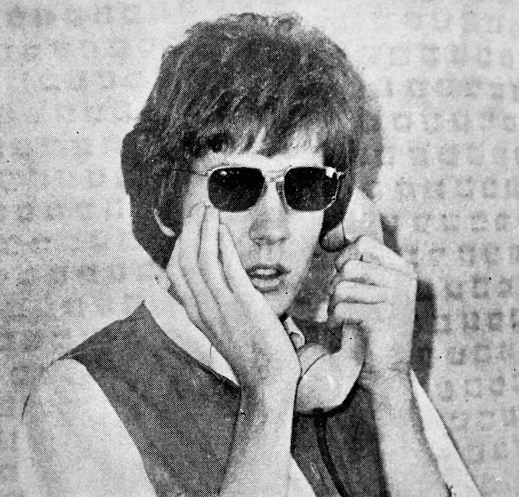

goodvibeshaver
I'm trying to remember how the fuck you write in HTML, this is a work in progress. I'm not doing any fancy CSS shit either, that shit is for dorks..
I wanted this to serve as a combination of an "About me"-page, and blog of sorts.
I'm not particularly special and don't warrant any sort of interest, but I thought it'd be fun. Also, RIP Emil.
